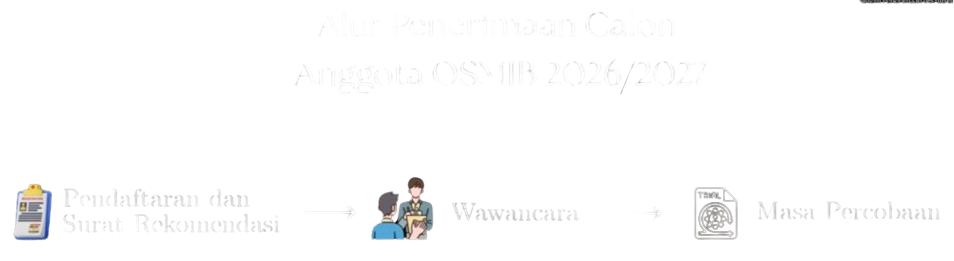
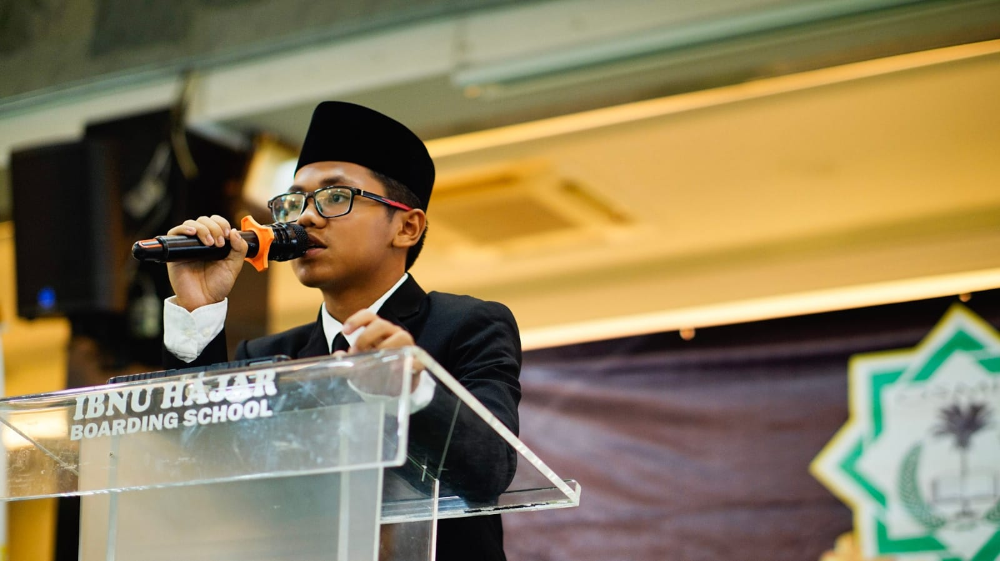
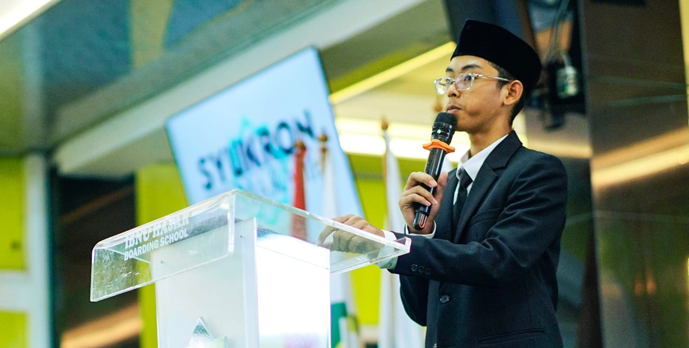
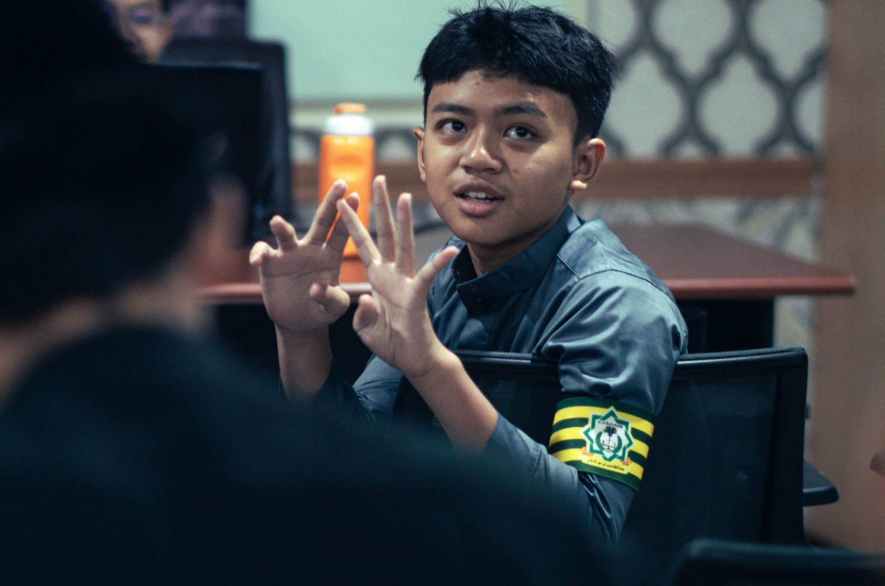
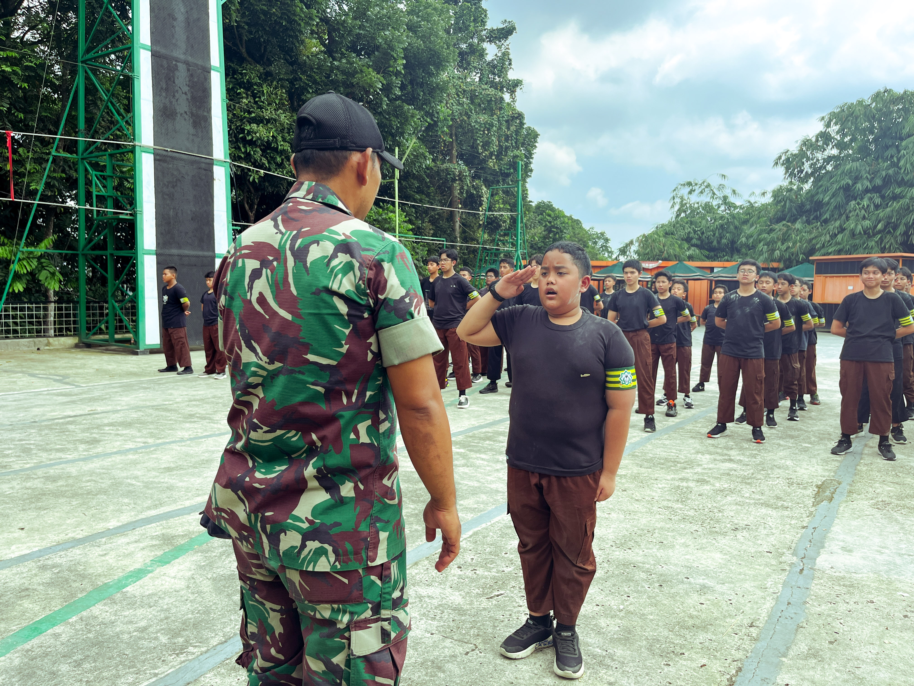
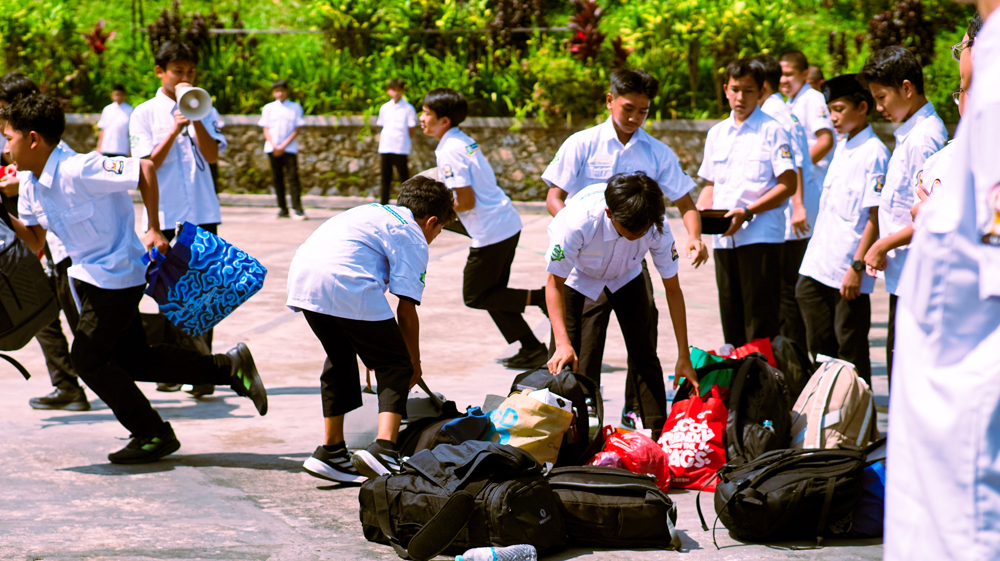
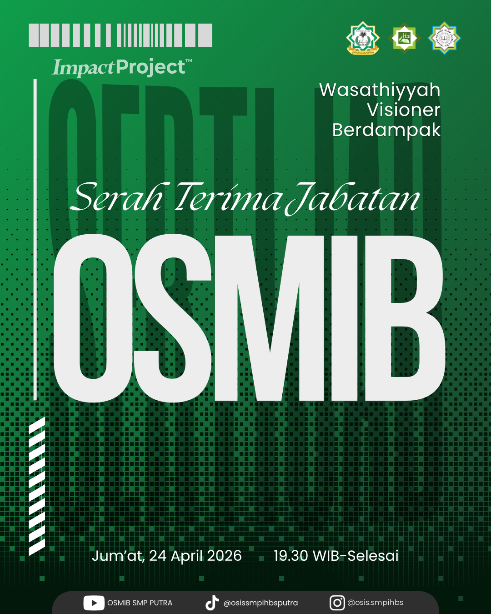

Selamat Datang Di
OSMIB
SMP Putra
"Kabinet Visioner" Masa Bakti 2026/2027
Apa Itu OSMIB?
OSMIB (Organisasi Santri Ma'had Ibnu Hajar) IHBS adalah organisasi siswa intra sekolah yang menjadi wadah bagi santri untuk mengembangkan potensi diri, membangun karakter, dan berkontribusi dalam kehidupan akademik maupun non-akademik. Dengan nilai-nilai WASATHIYAH, VISIONER, dan BERDAMPAK, OSMIB fokus pada pengembangan kepemimpinan dan dampak positif bagi lingkungan sekolah serta masyarakat sekitar.
Visi
"Menjadi organisasi yang berdampak dan menjadi teladan bagi organisasi santri tingkat SMP lainnya, dengan berasaskan Al-Qur'an, Sunnah, serta nilai-nilai wasathiyah."
Misi
- Menanamkan nilai-nilai keislaman berdasarkan Al-Qur'an dan Sunnah.
- Membangun budaya disiplin, amanah, dan tanggung jawab.
- Mengembangkan jiwa kepemimpinan yang adil dan bijaksana.
- Mewujudkan program-program yang berdampak positif.
- Menjaga prinsip wasathiyah dalam kehidupan berorganisasi.
Program OSMIB
OSMIB membutuhkan beberapa program untuk mendapatkan visinya, program tersebut di buat untuk bermanfaat bagi siswa dan anggota OSMIB itu sendiri.
Berikut Program-Programnya:
SPOB
SPOB di Ibnu Hajar Boarding School (IHBS) adalah singkatan dari Sistem Penerimaan OSMIB Baru. Sistem ini merupakan proses seleksi resmi yang digunakan oleh sekolah untuk memilih pengurus organisasi siswa di lingkungan asrama, yang dikenal dengan nama OSMIB (Organisasi Santri Mahad Ibnu Hajar).
Tujuan utama dari SPOB adalah untuk menyaring calon pengurus organisasi yang memiliki jiwa kepemimpinan, tanggung jawab, dan kompetensi yang sesuai dengan nilai-nilai sekolah. Proses ini memastikan bahwa santri yang terpilih mampu mengelola kegiatan asrama dan menjadi teladan bagi santri lainnya.
Inilah Alur Penerimaan Calon Anggota OSMIB baru:


.jpeg)

OSMIB Literasi
OSMIB Literasi adalah program penting di bawah naungan OSMIB , yang fokus pada pengembangan budaya baca, tulis, dan wawasan pengetahuan santri di Ibnu Hajar Boarding School.
OSMIB bertanggung jawab untuk meningkatkan minat baca dan kemampuan literasi dasar santri, yang mencakup literasi baca tulis, digital, hingga sains. Tujuannya adalah agar santri tidak hanya unggul dalam ilmu agama (diniyyah), tetapi juga memiliki wawasan umum yang luas.


Rapat Kerja (Raker) OSMIB adalah momen krusial di mana pengurus yang baru terpilih (setelah lolos seleksi SPOB) berkumpul untuk merancang kegiatan mereka selama satu masa bakti.
Raker OSMIB adalah tahap perencanaan matang sebelum eksekusi. Tanpa Raker, organisasi akan berjalan tanpa arah. Biasanya, hasil Raker ini akan disahkan oleh Kepala Sekolah atau Mudir Ma'had sebelum program-programnya mulai dijalankan kepada seluruh santri.
Raker berfungsi untuk mengunci tanggal-tanggal penting. Hal ini penting di boarding school agar kegiatan organisasi tidak mengganggu jadwal rutin ibadah dan belajar santri.



Dalam struktur organisasi santri di Ibnu Hajar Boarding School, Upgrading OSMIB adalah agenda pelatihan khusus yang bertujuan untuk meningkatkan kualitas, kapasitas, dan kekompakan para pengurus yang baru dilantik. Jika Rapat Kerja (Raker) fokus pada apa yang akan dikerjakan (program), maka Upgrading fokus pada siapa yang mengerjakan (pengembangan diri pengurus).



Divisi OSMIB
OSMIB mempunyai 9 divisi untuk memudahkan menjalankan program-program yang sudah di buat oleh OSMIB itu sendiri.
1. Badan Pengurus Harian (BPH) 👑
Mengkoordinasikan seluruh rangkaian kerja OSMIB SMP Ibnu Hajar Boarding School (IHBS).
2. Divisi Media 📷
Mengerjakan hal-hal kreatif, membantu OSMIB lain di bidang desain dan editing, dan menjadi divisi yang sering mendokumentasikan suatu acara.
3. Divisi Ekonomi Kreatif 💸
Membuat dan membangun jiwa kewirausahaan santri melalui program-program kreatif dan mandiri (Impact Project).
4. Divisi Ketertiban 👮
Menjamin kedisiplinan santri dan memastikan seluruh aturan asrama berjalan dengan baik.
5. Divisi Pendidikan 📖
Membangun jiwa literasi santri-santri IHBS, mempraktikkan 6S kepada seluruh warga IHBS, dan mempraktikkan bahasa Arab dan Inggris setiap hari sesuai ketentuan yang ada.
6. Divisi Pelaksana Acara 🎤
Membuat acara-acara yang kreatif dan unik agar tetap meninggalkan memories kepada santri tentang acara tersebut.
7. Divisi Inovasi Digital 🖥️
Membuat inovasi-inovasi yang bermanfaat dan berdampak bagi OSMIB atau pun non-OSMIB serta santri dan guru.
8. Divisi Layanan Umum 📦
Membuat lingkungan IHBS menjadi bersih dan membantu murid ketika mengalami cedera/sakit.
9. Divisi Olahraga ⚽
Membuat event-event olahraga untuk membuat santri bisa mencari bakatnya di bidang non-akademik.
Kabinet Visioner OSMIB 26/27
Badan Pengurus Harian (BPH)
- Presiden: Zaki Shailendra Whisnutama
- Wapres: Muhammad Izzan Hamid
- Sekretaris: Prabu Raditya Ahsan
- Bendahara: Abdullah Rakha Bilfaqih
Media
Ekonomi Kreatif
- Ketua: Keanzie Faiz Hamizan
- Wakil: Fathan Oemar Aljabbar
- Sekretaris: Dava Jeremy Putra Setiawan
- Anggota:
- Rafif Tsalatsa Handianto Putro
- Khalifa Mahardika
- Moh Al Farraby Aidrus
Ketertiban
- Ketua: Faris Mozakky Hidayat
- Wakil(I): Dafa Maulana Hartoyo
- Wakil(II): Mahran Mahogra Anwar
- Sekretaris: Muhammad Abiyyu Raihan
- Anggota:
- Faiz Haidar
- Muhammad Hanif Rasyid
- Muhammad Danish Firdaus
- Kahfi Muhammad Zain
- Andi Abdullah Al-Fauzan
- Calief Sakha Angkasa
- Sadad Fadhil Hazlam
- Dizhwar Alsyazani Kasel
- Muhammad Al Farabi
Pendidikan
Pelaksana Acara
- Ketua: Muhammad Cakra Alhaqqi
- Wakil: Khalif Rakai Muhammad
- Sekretaris: Darren Alghiffary
- Anggota:
- Muhammad Hamzah Abdulhakim
Inovasi Digital
- Ketua: Annaqie Razzan
- Wakil: Khairan Pranawa Kamil
- Sekretaris: Uways Fathul Ulum
- Anggota:
- Barazzaq Aliffauzan Bayus
- Mu'daffa Aufar Alfath
Layanan Umum
Olahraga
- Ketua: Athar Ahmad Fayiz
- Wakil: Arsya Kemal Rachmatullah
- Sekretaris: Muhammad Aulia Lutfan
- Anggota:
- Arfa Al Hamizan
- Fairel Athariz Devara
- Rakean Alfarizi Ramadhan
Ingin Tahu Lebih Lanjut Tentang OSMIB?
Follow Our Social Media
"Wasathiyah, Visioner, Berdampak"
Salam OSMIB, salam Visioner.
📰 Informasi website OSMIB
-
📢 Info: Serah terima jabatan OSMIB dilaksanakan pada tanggal 24 April 2026

- 📢 Info: OSMIB Level Up dilaksnakan pada tanggal 27 April 2026
- 🚀 Update OSMIB 26.1:
- ✅ Update: Membeli domain .org
- ✅ Update: Berhasil pindah ke Netlify.
- ✅ Fix: Favicon/Logo globe sudah teratasi.
- ✅ New: Sistem Patch Note otomatis.

Salam OSMIB, salam Visioner.